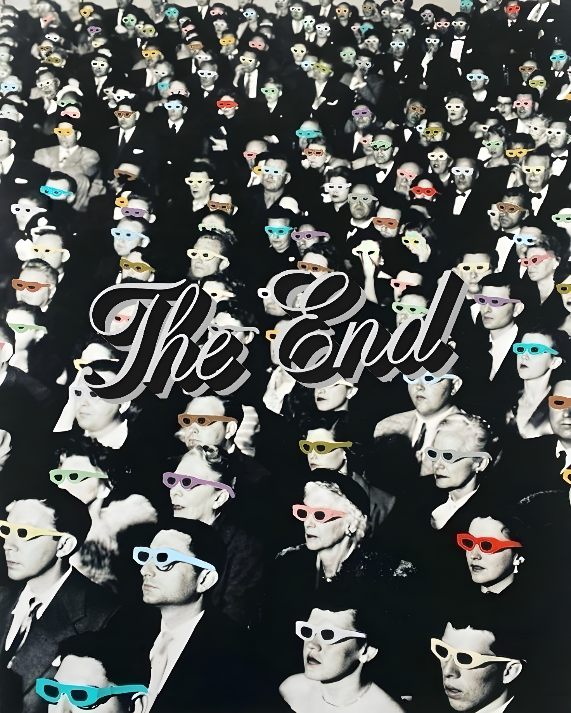

Introduction
A story guided by time
Cinema reflects technological progress, societal changes, and evolving audience preferences. Over the past four decades, the film industry has undergone major transformations: from the rise of blockbuster franchises to the emergence of streaming platforms, from the dominance of traditional genres to the explosion of diverse content.
Rather than presenting isolated charts, this project structures the data as a continuous journey. As you scroll through time, each section reveals a new dimension of cinema's evolution: how production volumes shifted, which genres captured audiences, how critical reception changed, and what the economics of filmmaking tell us about industry priorities.
1. Movie Production Over Time
How has production volume changed?
Starting our journey in the late 1980s, we see how the volume of cinema production has shifted across decades. We track the number of movies released each year, revealing growth patterns and fluctuations in the industry. Click on a genre below to filter the data and discover which genres drove production growth.
Movies released per year
1988–2025Genre evolution
Stacked composition by decade2. Genre Evolution
Which genres dominated different periods?
Cinema's evolution is shaped by the genres that dominate each era. This visualization shows how different genres have grown (or declined) over time from 1988 to 2025. Each color represents a distinct genre, revealing which storytelling traditions have endured and which have emerged.
3. Quality Distribution Over Time
How is movie quality distributed?
More production doesn't necessarily mean better films. This line chart tracks average movie ratings over time, revealing whether quality has remained stable, improved, or declined as the industry scaled.
Quality metrics by year
1988–2025Budget vs revenue dynamics
By genre and time period4. The Economics of Cinema
How do budgets relate to revenue?
This visualization reveals the relationship between production budgets and revenue across genres and time periods. Use the decade filters to compare different eras. Observe how financial investment relates to returns, identify profitability patterns across genres, and see where blockbusters dominate versus where smaller productions thrive.
5. Representative Films
What films represent each era?
Data reveals patterns, but cinema is ultimately about stories. We connected abstract trends with concrete examples by showcasing landmark films from different decades. Seeing actual movies helps interpret the data and relate insights to the films that shaped audience expectations.
6. Key Insights
Patterns that shaped cinema
Four decades of data reveal how cinema has transformed at every level — from the sheer volume of films made, to the genres audiences gravitate toward, to the economics that now define what gets made and what gets seen.
An industry that never stopped growing
Annual film production grew 7.4× between 1988 and 2024 — from 7,100 to nearly 55,000 releases per year. Even the COVID-19 pandemic barely registered: production dipped just 1% in 2020 before rebounding to record highs, driven by streaming and lower digital production costs.
Horror surged — Documentary exploded
Horror production grew 7.6× from the 1990s to the 2020s, outpacing every other major genre. Documentary grew even faster in raw numbers — from 11,885 to 62,811 titles — reflecting streaming platforms' insatiable appetite for non-fiction content.
Ratings have quietly risen
Average ratings climbed from 5.53 in 1988 to 7.34 in 2025. This likely reflects a selection effect: as total volume grows, only the most-rated titles accumulate enough votes to register — quality didn't simply improve, visibility did.
Blockbusters concentrate wealth
In the 2010s, the top 1% of films by revenue captured 19% of all box office earnings. Avengers: Endgame alone grossed $2.8B — more than the combined revenue of thousands of mid-budget films released the same decade.
Your Cinema Era
What did cinema look like when you were born?
Move the slider to explore any year in the dataset.
Film production 1988–2024 — your year highlighted
